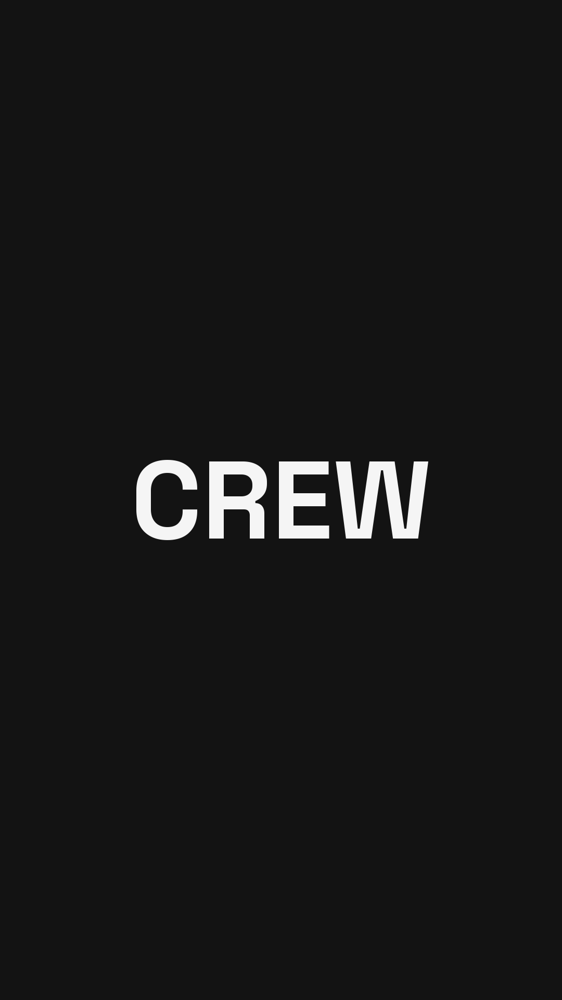
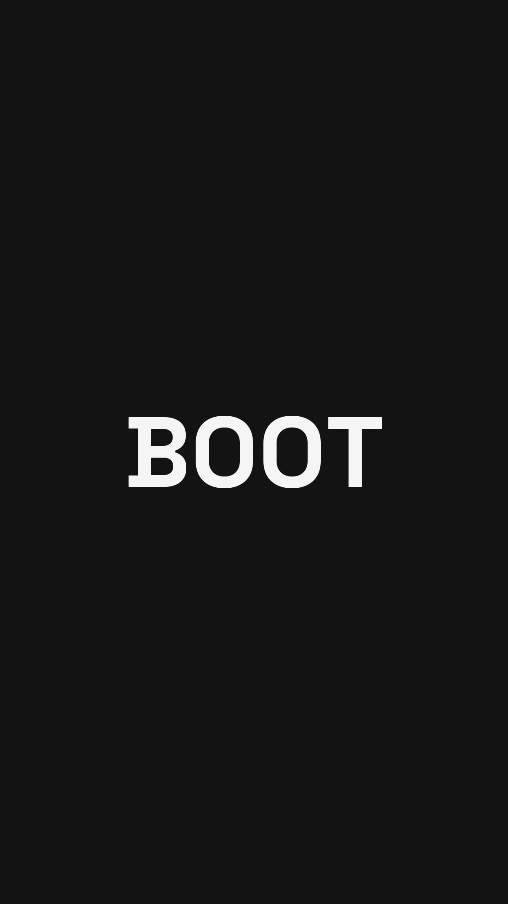
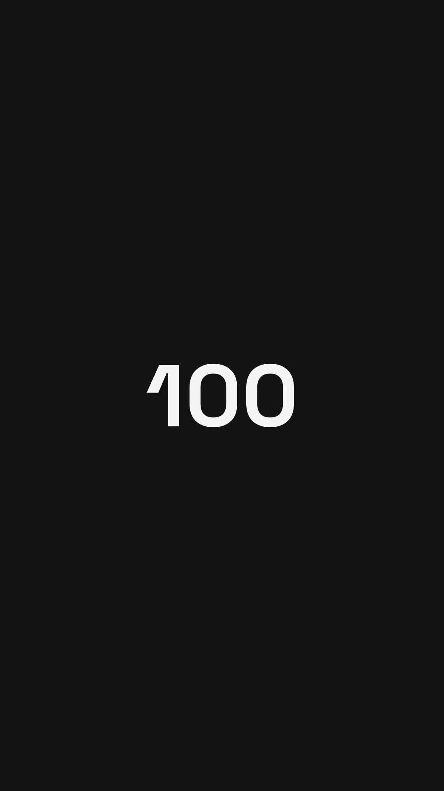
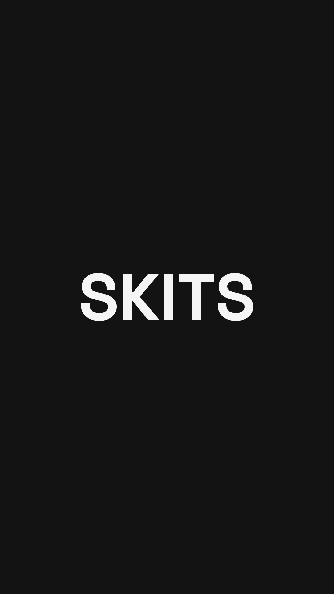
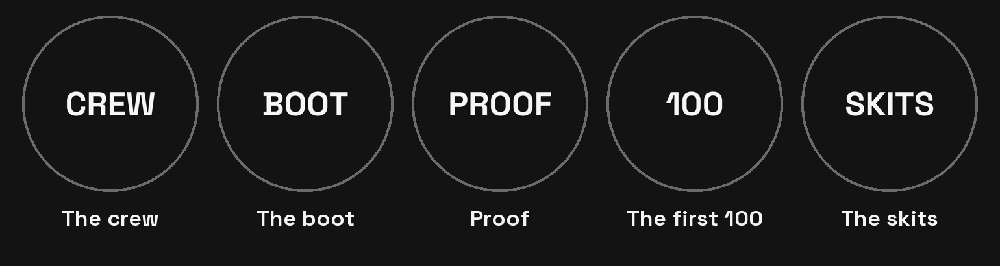

FAR · updated Tue 20 Oct 2026 · seven things to try for four weeks, with Fil's changes in
Vote by Saturday: the poll on the dashboard. One tap per move, and a note if you'd change it. Nobody else has voted yet, so the poll now carries these changes.
The big brands keep their funny reels clean and ask for the sign-up somewhere else. Our own reels that ended with one of us saying "join the Founding Crew" made our best website-click days of the year.
And sign-ups follow link taps, not follows. The Old Fella fortnight brought 2,371 new followers and 15 sign-ups. So the job for the first 100 is more taps on the link.
One of us, as himself, 30 to 50 seconds on a tripod. Who he is, one real thing about the boot that is still open, then the ask out loud: "join the Founding Crew, link in bio."
Why: our three reels that ended on that ask made the three best website-click days of the year (3 Apr, 10 Apr, 17 Jul).
Any of the four Any of the four, each telling only his own part. Ideas: Fil on the build and the money, Grant or Lionel on what the boot is like on their feet, Con on what blokes in his chair say about their boots. If the one who planned it can't film by Saturday night, whoever is free does. Nobody is the backup.
First one: if the four of us film together this weekend, make it a "this is us" reel with all four, and pin it.
How we'll know: Works if 2 of the 4 reels each make 8 or more follows in 72 hours and 8 or more website clicks in two days.
Watch: Build in public, 36 s · Origin story, 50 s
Rules: "Founding Crew", never "early access". No water claim. Price and dates only the way the FAQ already says them. Caption: the locked line "Founding Crew in bio."
What could go wrong: Those rates came from warm audiences in launch weeks. Cold, they may be lower: October's founder and product reels drew 910 to 4,607 views.
Two to four of us in character. Frame 1 names the type in a few words, like "POV: THE MICROMANAGER". Then 30 to 70 seconds of beats on that one type, building to a payoff. No brand, no boot pitch, no ask.
Why: every big follow wave this year came from a skit like this: That One Bloke, the Micromanager, Close Enough, the Old Fella, Work Nicknames.
All four, any mix All four, any mix. Not just Grant and Lionel.
Lined up: Work Nicknames part 2, the Old Fella refilm (on since 9 Sep, off council land), the Micromanager and Close Enough refilms, The Lookout, The Estimate. An STDS or a Smoko can take a slot too.
How we'll know: Works if 1 of the 8 skits passes 25 shares per 1,000 views in 48 hours.
Watch: Work Nicknames, 366 follows · That One Bloke refilm
Rules: No ask of any kind on That'll Do, STDS or Smoko (locked). Location and employer check before any shoot. Swears starred in captions.
What could go wrong: Some skits built this way still stall. Reach is partly luck, so judge a type on its shares, not on one post.
Comedy carousels stay pure comedy. FAR's locked rules make comedy a reach weapon, never a selling post, and the carousel studio won't put an order on a last slide.
Every second week Con builds a buyer-questions deck instead: where to buy, the sizes, the zip, when. The answers come word for word from FAR's locked FAQ. The last slide states a plain fact, and "Founding Crew in bio." goes in the pinned comment.
Con, start to finish Con picks the angle and the facts. Since 20 Oct the studio on the dashboard holds the FAQ's locked answers and runs the voice check, so nobody needs to send him anything.
How we'll know: Works if 2 of the buyer decks reach 5 or more profile visits per 1,000 views (October's carousels did 3.0 and 2.6).
Watch: Wilder's spec deck, a one-line footer ask · Liquid Death, the ask in the caption
Rules: Claims only from the FAQ. No water claim. Price only the way the FAQ says it ($219 for the first 100, $249 after).
What could go wrong: Of 15 brand carousels read slide by slide on 20 Oct, none ends on a sign-up slide: 2 carry a one-line footer and 8 put the ask in the caption. Nobody has shown a carousel ask turning into sign-ups, so this is a test.
A screenshot of the post with the link sticker on it, 1 to 2 hours after it goes up. Each of us adds the same sticker when he reshares. Skit days stay clean.
Why: link taps are the one number that moves sign-ups. Stories with a sticker got about 2 taps per 100 views. October's five Stories had no sticker and got none.
Whoever posted Whoever posted it. Anyone's job.
Can it be automatic? Not the sticker. Instagram's API can post a Story, but Meta's own developer docs say "Publishing stickers (i.e., link, poll, location) is not supported". Scheduling apps send a phone reminder and a person adds the sticker.
How we'll know: Works if the four weeks get 20 or more Story link clicks.
Rules: No sticker on skit-day Stories, so That'll Do, STDS and Smoko stay clean.
What could go wrong: Story views have dropped to 52 to 90, so expect a handful of taps a week to start.
When a skit passes 50,000 views in a day, the spare goes up at 7pm the next day, so the people arriving meet a founder with the ask.
Why: in the Micromanager wave, two founder reels picked up 27 follows on 6,587 views while an STDS in the same wave made 1 on 14,899.
Whoever films a Monday reel Whoever films a Monday reel films a second one in the same sitting and puts it in Ready to post. Whoever is posting that week puts it up.
If no skit takes off by Sun 22 Nov, the spare takes a Monday slot. Nothing is wasted.
How we'll know: Works if the spare makes 10 or more follows in 72 hours.
Watch: Founder reel in the Micromanager wave
Rules: Same rules as the Monday reel. Posts at 7pm, never off the window.
What could go wrong: Only seven runs passed 50,000 views in a day this year, so it may not fire in four weeks.
New pins and highlights (see Pins and highlights), Grant's bio ("Co-founder @farworkwear" plus the site link, his call), and archive the 'Real tradie questions' reel (DX6TTQUjl02), which says "water resistant".
Already done: the bio, Fil's Co-founder line, the https link, the 'Wet feet on site' reel archived, the 7 early-access comments deleted.
Anyone with the FAR login Anyone with the FAR login on their phone.
How we'll know: Works if follows per 100 profile visits beat October's 12.6.
Rules: The name field stays "FAR Workwear | Work Boots". No water claim anywhere on the profile.
What could go wrong: Profile changes are cheap but hard to measure: they share weeks with every other move.
Anyone asking when, where or how much gets a straight answer from the FAQ and the route: "Founding Crew in bio", or the link in a DM. It's mostly comments; DMs are rare.
Whoever fronted the post Whoever fronted the post replies. Con keeps a running list of buyer names for The 100.
How we'll know: Works if every buyer question gets an answer inside a day.
Rules: Answering a question under a skit is fine; don't add our own link comment on a skit. No "thanks for the follow".
What could go wrong: No file shows a reply moving anyone yet. It costs little, and every "where do I get them" is a name.
Same shape every week. Each week's posts go in its Drive folder by 6pm the Sunday before, because the dashboard checks then. Ideas to pick from, never orders.
| When | What goes up | Who |
|---|---|---|
| Mon 7pm | Founder to camera, ends on "join the Founding Crew" | Any of the four |
| Tue 7pm | Skit on one person type, or an STDS or Smoko | All four, any mix |
| Thu 7pm | Carousel: comedy one week, buyer questions the next | Con |
| Fri 7pm | Skit on one person type, or an STDS or Smoko | All four, any mix |
| After Mon and Thu | Story with the link sticker | Whoever posted |
| Every day | Buyer questions answered | Whoever fronted the post |
| Week | Dates | Organises | Note |
|---|---|---|---|
| W44 | 26 Oct to 1 Nov | Grant | First Monday reel. Comedy carousel. |
| W45 | 2 to 8 Nov | Con | First buyer-questions deck. The private page opens in early November. |
| W46 | 9 to 15 Nov | The boys decide | The rotation says Lionel. Learn-the-tools day first. |
| W47 | 16 to 22 Nov | The boys decide | The rotation says Grant. Results read Mon 23 Nov. |
W44's folder is due Sun 25 Oct at 6pm, before the vote is read, so W44 runs on what's ready: one founder reel filmed by Sunday, and two skits from the Ready to post pool.
| Move | The number | Works if |
|---|---|---|
| Monday reel | Follows at 72 hours, website clicks over two days | 2 of the 4 reels hit 8 or more of each |
| Skits | Shares per 1,000 views at 48 hours | 1 of the 8 passes 25 |
| Buyer carousel | Profile visits per 1,000 views over two days | 2 decks reach 5 or more (October: 3.0 and 2.6) |
| Stories | Link-sticker taps | 20 or more across the four weeks |
| Spare reel | Follows at 72 hours | 10 or more, if it fires |
| Profile | Follows per 100 profile visits | Better than October's 12.6 |
| Replies | Buyer questions answered inside a day | All of them |
Claude reads the numbers every Sunday night and posts them to the dashboard.
Fil's idea: from Mon 9 Nov, Grant, Lionel and Con decide who plans, who edits and who posts. All four still film, Fil included.
The case for going slow: since June we've posted about twice a week against a plan of four to five, with a 21-day dark run in Aug and Sep. Lionel asked on 19 Oct for a day to learn the FAR brain and its tools.
So the suggestion: yes from W46, with that learn-the-tools day first, and one thing that stays fixed: four posts a week at 7pm. Everything else is yours to decide.
It's on the poll.
Fil asked whether the profile should show who we are, not three skits. Mostly yes: most brands don't pin at all, and the comedy brands that do pin skits use their highlights to say who they are, what they sell and how to buy.
Pins: 1, a new reel with all four of us (until then, Fil's build-in-public reel). 2, a "meet the boot" carousel Con can build in the studio. 3, Work Nicknames, our best follow earner.
Highlights: five, with matching covers. Hold a cover to save it to your phone.





Save the five covers. On the FAR profile tap New in the highlights row, pick the Stories, and name it (The crew, The boot, Proof, The first 100, The skits). Then open it, Edit highlight, Edit cover, and pick the cover from your camera roll.
Move the old ones in: v2 and SHIFT TEST into The boot, PROOF. into Proof, That'll Do into The skits.
Share posts to your Story publicly before adding them: a Close Friends Story stays Close Friends in a highlight.
The last Smoko went up in March and the last STDS in June. Two new cards on the Ideas board, STDS IS BACK and SMOKO IS BACK, each have four questions to pick from, with our own old episodes as the examples.
What worked before: one of us saying a moment every tradie knows (the 5:30am alarm, watch), and questions about what you've seen, not about yourself.
The refilm is on. It got reported because people thought we were council workers on the job, so it gets filmed off council land with nothing that looks like council work. Before the shoot, whoever has the FAR login checks Settings, then Account Status, to see whether the old removal still counts against the account.
The full research, with every number and source, is in FAR's research files (creator intel, 19 and 20 Oct). This page is unlisted: anyone holding the link can open it.